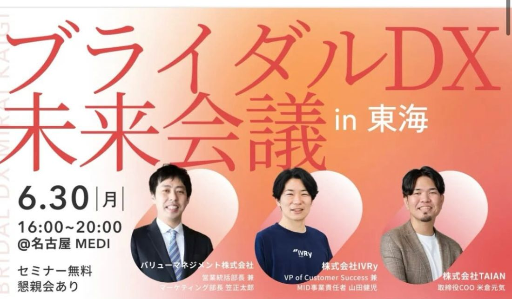

日程を改めて、内容もバージョンアップして——新しいウェディングの可能性を感じていただく、TAIANさんのイベントが決定しました。
協議会会員様の特別価格も設定いただいております。ぜひこの機会に、新たな可能性を見つけていきましょう！

ブライダルDX未来会議は、これからのブライダル業界におけるテクノロジーやAIを活用した業務プロセス／カップル体験の変革について、様々な有識者をお招きして徹底議論する会議です。セミナーだけではなく、懇親会もご用意しておりますので、様々なブライダル関係者・有識者との情報交換をお楽しみいただけます。
今回の「ブライダルDX未来会議 in 東海」では、愛知ウェディング協議会の協力のもと、ブライダル業界におけるテクノロジー活用のポイントを、ブライダル業界の有識者・DX推進の有識者それぞれと考えていきます。
「DXが大事なのは分かるけれど、何から手をつければいいのか」——そう感じている方にこそ、方向性を見極める手がかりが得られる場です。
登壇者：バリューマネジメント株式会社 営業統括部長兼マーケティング部長 笠正太郎様
ファシリテーター：株式会社TAIAN 取締役COO 米倉元気
登壇者：株式会社IVRy VP of Customer Success 兼 MID事業責任者 山田健児様
登壇兼ファシリテーター：株式会社TAIAN 取締役COO 米倉元気
異業種の最先端事例から学べるのも、この会議の大きな魅力です。ブライダルの中だけでは気づけない発想が、きっと見つかります。
詳細のプログラム（タイムラインや各セミナーの内容）は、公式ページよりご覧いただけます。